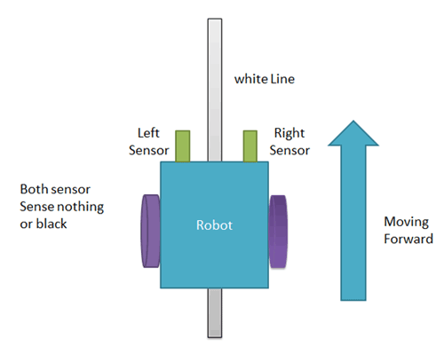
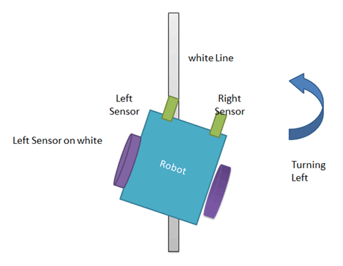
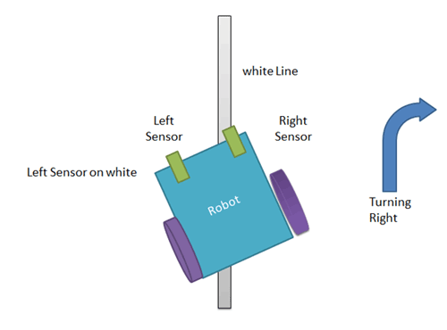
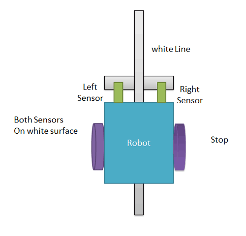

➜Line follower Robot is a machine which follows a line, it may be a black line or a white line.
➜Basically two types of line follower robots are: one is black line follower which follows black line and second one is white line follower which follows white line.
➜Line follower actually senses the line and run over it. In our previous projects, we have made a black line follower robot using arduino.
➜Line follower robot senses white line by using sensor and then sends signals to microcontroller. Then microcontroller drives the motor according to sensors' output.
➜Here in this project we are using two IR sensors pair. Suppose we are calling left sensor and right sensor of IR sensor Pair, then both left and right sensors sense nothing or black line then robot move forward.
➜And when left sensor senses white line then robot turn left side.
➜and when left sensor sense white line then robot turns to right side until both sensor comes at black line or senses nothing surface.
➜And when both sensors comes on white line, robot stop.
